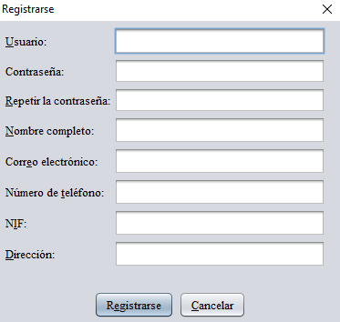
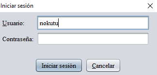
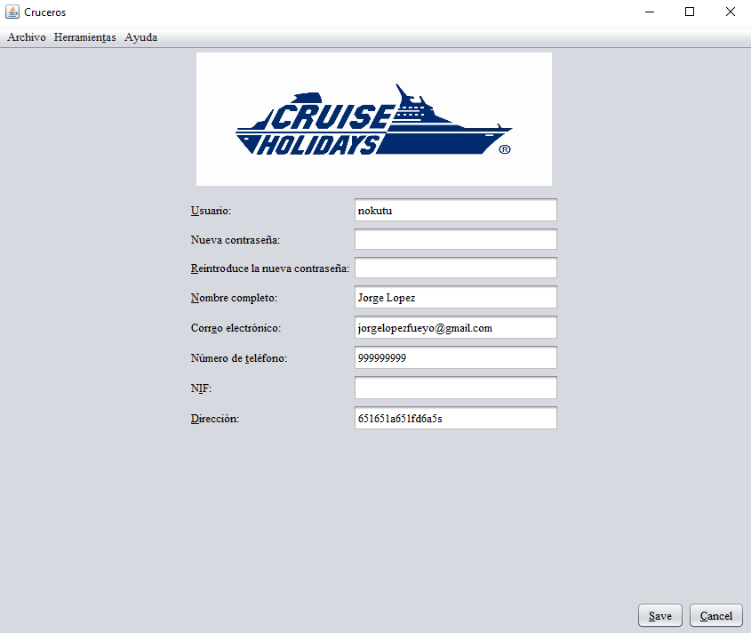

Gestión del usuario
Para poder reservar satisfacotriamente un crucero es necesario disponer de un usuario único y personal.
Creación de usuario
Para crear un nuevo necesario solo hay que pulsar en el botón "Registrarse" de la barra de navegación o después de haber introducido los datos de los pasajeros en el enlace cnetral del panel. Una vez lo haga, aparecerá una nueva ventana, que tendrá que rellenar con sus datos personales.

Inicio y cierre de sesión
Para iniciar la sesión debe pulsar en el botón "Iniciar sesión" de la barra de navegación o después de haber introducido los datos de los pasajeros en el enlace central del panel. Cuando lo haga le aparecerá una nueva ventana, que tendrá que rellenar con los datos de su usuario. Tenga en cuenta que es necesario haberse registrado previamente para poder iniciar sesión correctamente.

Si desea cerrar la sesión, solamente pulse en el botón "Cerrar sesión" de la barra de navegación.
Edición de datos personales
Una vez que haya iniciado sesión, aparecerá en la barra de navegación un botón con su nombre de usuario. Haciendo click en el irá a un panel en el cual podrá editar los datos personales asignados a su usuario. Tenga en cuenta que, en caso de hacer algún cambio, será necesario introducir su contraseña para confirmalos (la antigua en caso de cambairla).
